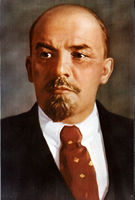
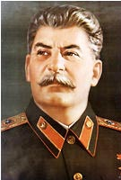
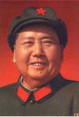

马克思 |
恩格斯 |
 列 宁 |
 斯大林 |
 毛泽东 |
宗旨： |
||||
简论《实践共产主义网》指导思想、基本任务和基本原则
《实践共产主义网》自己2004年1月开通以来，在共产主义朋友和相关同志的大力支持下，走过十一年的历程。 其间, 在工信部有关领导的要求下，2008年后由王长友个人主办，改为由北京红色寰宇文化传播中心主办，在此，我们谨向所有支持和关心我们的领导和同志们表示衷心的感谢！ 《实践共产主义网是马克思列宁主义毛泽东思想的基本原理和共产主义理论与实践在21世纪的中国大陆的传播、探索和发展。 马克思列宁主义毛泽东思想就是《实践共产主义网》的指导思想！所以在《共产主义论坛》发表一切言论都必须符合马克思列宁主义毛泽东思想的基本原理！这是我们衡量一切是非的唯一标准，也是我们坚持什么，反对什么，在一起讨论问题的基础，否则，在这里，志不同，不相为谋，请到别处发表观点和文章。 《实践共产主义网》的基本任务就是“用马克思列宁主义毛泽东思想的科学真理武装人民群众；用彻底消灭私有制度和私有观念发扬和提倡集体主义引导人民群众；用无产阶级世界观共产主义人生观、价值观塑造人民群众；用解放全人类实现共产主义的社会制度的伟大目标鼓舞人民群众”。用最简单的话说，就是播撒共产主义的火种，把国际共产主义运动推向新的高潮！ 《实践共产主义网》的基本原则是在是马克思列宁主义毛泽东思想的基本原理的基础上，探索在当前形势下，如何理论联系实际，把国内外共产主义运动推向新的高潮！可以是理论探索，也可以总结实践经验，但是，任何歪曲、污蔑、诽谤和攻击马列共产主义的观点和文章都必须坚决彻底地进行删除！！！ 祝愿一切坚信马列共产主义的革命同志永远团结、英勇、奋进！！！ 2015年12月4日14点25分于北京
|
||||
|
[返回首页] |
||||